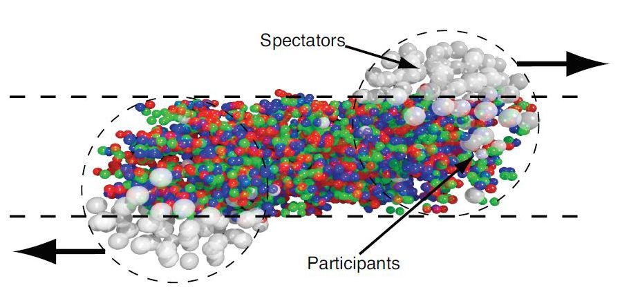
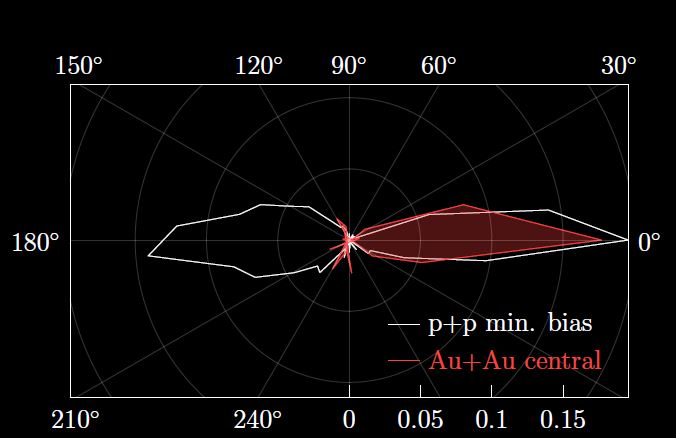

Em 2005, físicos que trabalhavam no Relativistic Heavy Ion Collider (RHIC), em Nova York, descobriram uma nova fase da matéria. Eles aceleraram átomos de ouro a velocidades próximas a da luz e os colidiram, formando o então chamado plasma de quarks e glúons.
Imagine o seguinte: os átomos de ouro estavam a velocidades relativísticas (próximas a da luz), portanto estavam com muita energia. Ao colidirem, as distâncias ficaram curtíssimas. Logo após essa colisão, a constante de acoplamento é pequena o suficiente para que haja desconfinamento dos quarks. Neste momento, a matéria hadrônica passa por uma transição de fase na qual os quarks e os glúons estão livres e não mais presos em hádrons. Esta nova fase é o QGP.
Podemos fazer uma analogia do QGP com a matéria "normal". Se você adicionar calor a um cubo de gelo, ele passará para a fase líquida. Se você continuar adicionando calor, passará para a fase gasosa. E se adicionarmos calor à matéria hadrônica? Será que ela chegaria a uma fase gasosa onde os quarks e glúons estão livres?
Em 1975, foi sugerido que uma nova fase da matéria existiria em condições extremas de temperatura ou pressão. Nessa fase a matéria seria fracamente interagente (como um gás) devido à liberdade assintótica e seria formado por quarks e glúons.
Mas, para a surpresa de todos, em 2005 foi descoberto que essa nova fase não se comporta como um gás, mas como um líquido! Esta conclusão foi alcansada depois de serem analisados 3 anos de dados, coletados desde 2000 no laboratório RHIC.
Existem três lugares principais onde uma pessoa pode achar o plasma de quarks e glúons. Primeiro, como resultado da colisão de íons pesados em aceleradores de partículas como o RHIC. Segundo, no centro de estrelas superdensas, como estrelas de nêutrons. E terceiro, no universo primordial, microssegundos após o big bang.
Existem dois laboratórios de grande porte no mundo que colidem íons pesados. O RHIC, nos Estados Unidos, colide íons de ouro e o LHC, na Suíça, colide íons de chumbo. Os íons são acelerados dentro de câmaras circulares rodeadas por ímãs que curvam as trajetórias dos mesmos. Ao longo das câmaras circulares existem detectores que analisam o resultado das colisões. O principal detector no estudo do plasma de quarks e glúons no LHC é o ALICE.
Ao serem acelerados, esses íons alcançam 99,99% da velocidade da luz. Quando colidem, parte da energia é depositada em um volume muito pequeno, criando um plasma com temperatura altíssima. As pressões são extremamente elevadas, fazendo com que este plasma se expanda e esfrie em um intervalo de tempo minúsculo. Não é possível medir ou observar o plasma de quarks e glúons diretamente. Ao invés disso, estudamos as partículas resultantes da criação e da evolução do plasma.
Detectores como o ALICE registram, evento por evento, uma foto tridimensional das trajetórias das partículas e suas propriedades.
A colisão ocorre da seguinte maneira: dois íons de chumbo são acelerados até atingir velocidades muito próximas a da luz. Em determinado momento eles colidem e produzem o plasma de quarks e glúons, que logo esfria e volta à fase de matéria hadrônica. Vamos olhar mais de perto algumas características do plasma de quarks e glúons no laboratório.
Imagine dois íons de chumbo viajando a velocidades relativísticas. Eles se pareceriam com panquecas graças a essa rapidez enorme. Se esses íons se chocarem de frente, o plasma de quarks e glúons terá um aspecto esférico e se expandirá em todas as direções de modo homogêneo. Mas, muitas vezes a colisão não é frontal. Nesse caso, o plasma não terá um aspecto inicial esférico e não se expandirá homogeneamente. Observe a figura:
Colisão de dois íons pesados relativísticos. Fonte: (Em “Elliptic Flow: A Brief Review por Raymon Senellings”)
Em uma colisão não frontal, existem quarks participantes (que vão formar o QGP) e quarks espectadores (não participam da formação do QGP). A letra b representa o parâmetro de impacto. Quanto menor, mais frontal será a colisão. Enquanto o plasma esfria, vários jatos de partículas são formados. Quando a colisão não é frontal, o fluxo desses jatos não é uniforme em todas as direções. A esse fenômeno damos o nome de Fluxo Elíptico.
Agora, pense no plasma de quarks e glúons já formado. Jatos de partículas estão saindo do plasma a grandes velocidades. Esses jatos são formados por quarks e glúons que se recombinarão em hádrons por um processo chamado de hadronização. Esses jatos se formam em pares, partindo do plasma de quarks e glúons e seguem em direções opostas: um para fora do plasma e outro para dentro. O jato que entra do plasma é suprimido e desaparece. Observe a figura:
Jatos de partículas.
Suponha que a figura de contorno branco seria o esperado caso não existisse plasma de quarks e glúons: dois jatos em direções diametralmente opostas. O que realmente acontece quando há formação de QGP é que um dos jatos é suprimido por que interage fortemente com o plasma e perde velocidade. Apenas observamos um dos jatos, como pode ser observado na figura em vermelho. A esse fenômeno damos o nome de Supressão de Jatos. Ele é um dos indicativos da existência do plasma de quarks e glúons.
Existe uma observação curiosa que os físicos ainda não conseguem explicar em relação à supressão de jatos. Imagine que no quintal da sua casa existe uma piscina cheia de penas. Se você jogar ao mesmo tempo uma bolinha de ping-pong e uma bola de boliche dentro da piscina, qual você acha que chegará ao fundo mais rápido? Você deve ter pensado: com certeza a bola de boliche, já que é mais pesada! Estranhamente, isso não é verdade para o plasma de quarks e glúons. Não importa se os jatos que tentam atravessar o plasma são de quarks leves ou pesados, eles são suprimidos da mesma forma. É como se a bolinha de ping-pong e a de boliche não conseguissem atravessar a piscina de penas da mesma forma!
A primeira etapa da evolução é a colisão de íons pesados em velocidade relativística, que como vimos, não é necessariamente frontal. Logo após há a formação do plasma que se expande produzindo jatos de partículas de modo não uniforme no espaço (Fluxo Elíptico). Alguns desses jatos escapam e passam por uma fase de hadronização (os quarks e glúons dos jatos se combinam em hádrons), enquanto outros jatos são suprimidos pelo QGP (Supressão de Jatos). Neste ponto estamos numa fase chamada de Gás de Hádrons onde todos os partons (quarks e glúons) já se confinaram em hádrons. Nesta fase, os hádrons interagem através de colisões, tanto elásticas como inelásticas, que produzem outros hádrons e continuam em expansão. Após um certo tempo expandindo, a distância entre hádrons é grande o suficiente para não haver mais interação entre eles e, a partir desse momento, suas características (como suas velocidades) permanecem as mesmas. Essa fase é chamada de freeze-out. Quando as colisões param de produzir outros hádrons temos um freeze-out químico. Quando finalmente param de colidir temos um freeze-out térmico. As partículas resultantes do freez-out colidem com as paredes do acelerador de partículas e são detectadas por instrumentos muito sofisticados.
Veremos agora onde, no universo, pode ser encontrado o plasma de quarks e glúons.